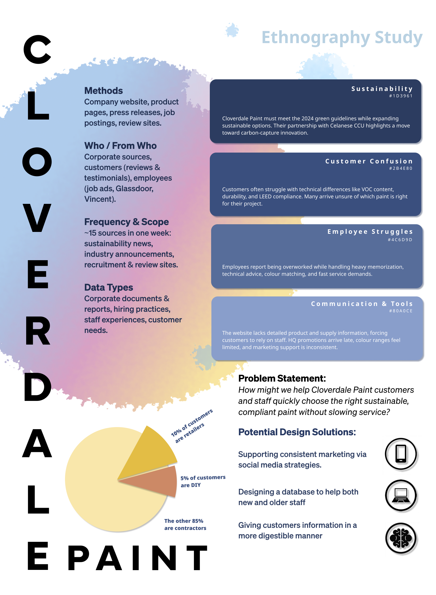
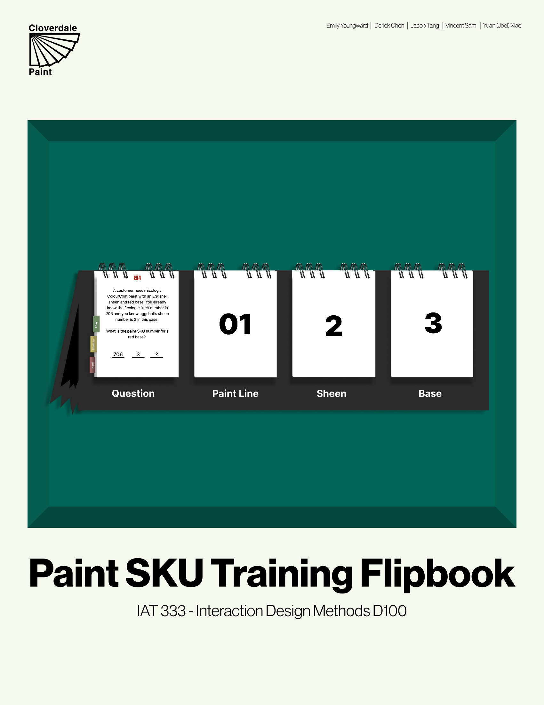
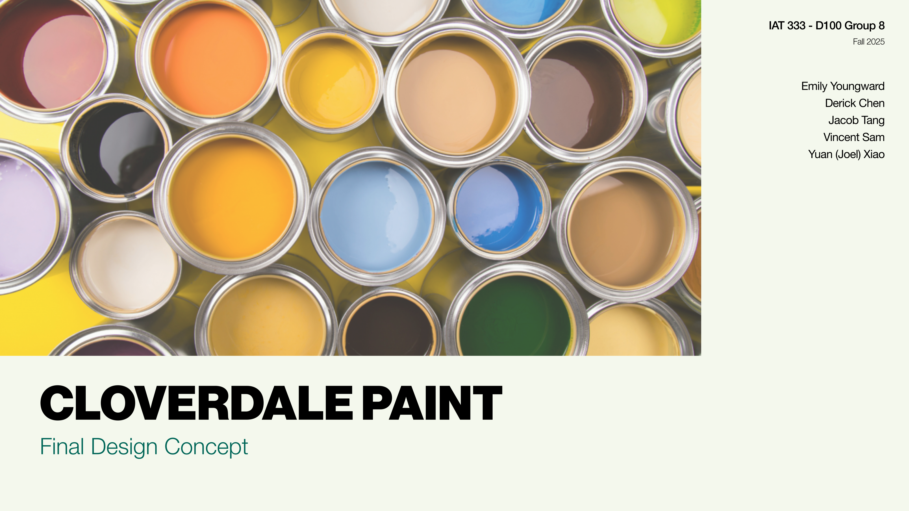
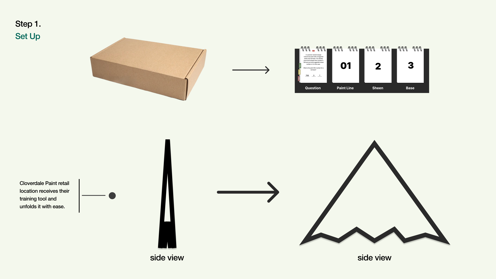
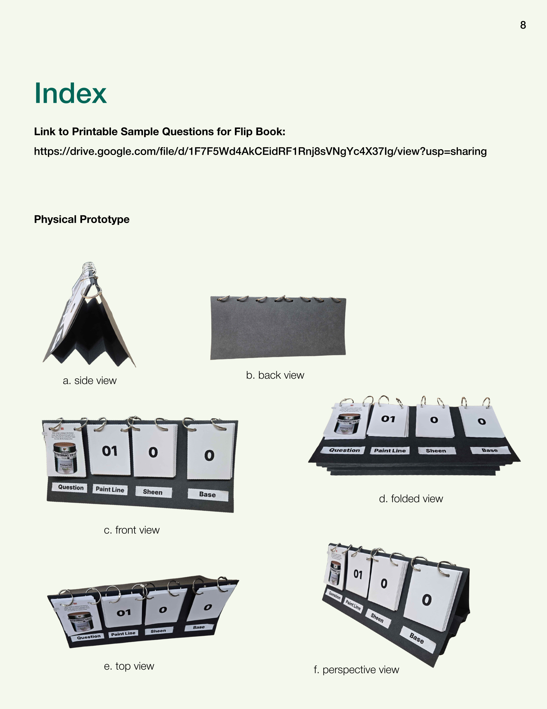

01 / Overview
Making paint SKUs easier to learn
For this project, my five-person team worked with Cloverdale Paint and its Learning & Development Coordinator to explore ways of improving training for new employees.
Our research showed that learning paint SKUs was one of the more difficult parts of getting up to speed. New employees were expected to remember product codes made up of different numbers and letters while also learning how to help customers on the retail floor.
Our final concept was a portable, foldable learning tool that combines a question-card deck with a three-section SKU flipbook. Employees can practise identifying a paint line, sheen, and base, then check their answer at their own pace.
02 / Client collaboration
Working with a real client
We developed the project in collaboration with Cloverdale Paint and its Learning & Development Coordinator as part of an interaction design methods course at SFU. Throughout the project, our team participated in client meetings, discussed training challenges, shared our research and ideas, and developed our final concept around the needs of Cloverdale's employees.
Working with a real organization also meant considering the environment where the training would actually happen. We focused on the realities of a busy retail floor, including limited time, the need for quick access to information, and the amount of support experienced employees were already providing to new staff.
The final flipbook concept was presented to Cloverdale Paint as part of our client collaboration. While it was not implemented in their stores, the project gave us the opportunity to develop and present a solution based on research, client input, and the constraints of a real workplace.
03 / Context
Understanding the problem
We began by researching Cloverdale Paint, its employees, customers, and existing training experience. We reviewed company information and employee experiences, then surveyed 12 employees across three stores.
One finding stood out: 92% of surveyed employees reported feeling unprepared to interact confidently with customers during their first one to three weeks on the job.
Employees also described the amount of product knowledge they had to remember, particularly paint SKUs, as a major challenge. Even simple orders could take new employees a long time to process while they were still learning the system.
This shifted our focus from improving training in general to a more specific question: how could we make practising paint product codes easier, faster, and less dependent on a trainer being available?

View ethnography research poster ↗
04 / Users
Designing around different employees
Our research helped us think about training from several perspectives within a store. New employees needed a way to build confidence without feeling overwhelmed, managers needed training tools that did not require constant supervision, and experienced employees needed to spend less time repeatedly helping new staff with basic product information.
We created personas to represent these different experiences, including a new employee balancing work and school, a store manager with limited time to train staff, and an experienced customer service representative who was frequently relied on for product knowledge.
05 / Ideation
Exploring different directions
Before settling on a physical training tool, our team explored several directions. These included a web-based training application, a portable scanner for helping employees manage orders and inventory, and a pocket-sized flashcard deck for learning paint colours and product information.
We also conceptualized a matching paint SKU game and a number flipbook as the project evolved. Each concept approached the training problem differently, but we kept coming back to the need for something that could be used quickly on the retail floor without requiring a computer or additional software.
 View first three initial concepts PDF ↗
View first three initial concepts PDF ↗
 View two further refined concepts PDF ↗
View two further refined concepts PDF ↗
06 / Workshop
Testing how people learn the information
We ran a participatory workshop with two SFU students who had no previous experience working at Cloverdale Paint. While the sample was small, the workshop gave us an opportunity to observe how people approached unfamiliar paint codes when they had to learn them for the first time.
Participants first received a portion of an Ecologic Line paint-code reference sheet and were asked to create their own study methods. We then introduced custom flashcards with hints, fill-in-the-blank questions, and quiz-style prompts.
A useful pattern emerged: participants naturally grouped numbers together and associated them with meanings, rather than simply trying to memorize the codes as individual strings. Fill-in-the-blank questions were also preferred, while some participants relied heavily on writing, pattern recognition, or discussing the information with another person.
During the workshop, participants also suggested the idea of a physical flipbook. This helped us move toward a tool that supported the way people were already breaking the SKU information apart.
07 / Design
From flashcards to a flipbook
The final direction combined the strengths of a flashcard concept with the structure of the number system. Instead of asking employees to remember an entire SKU at once, the flipbook breaks it into three parts: Paint Line, Sheen, and Base.
I designed the three-section structure and the way the SKU information is divided across the flipbook. I also designed the question-card format, including scenario-based and visual questions, and introduced Easy, Medium, and Hard tabs to give employees different levels of practice.
The goal was to make the tool useful without turning it into another formal training module. A trainee can choose a question, build the corresponding SKU using the flipbook, and check their answer independently.

View final project report PDF ↗

View final project slides PDF ↗
08 / Experience
Mapping the trainee's experience
We used a scenario journey framework to map how a new employee could encounter and use the tool during training. The experience was designed to work both independently and alongside another employee, allowing trainees to practise without needing a manager or experienced coworker to guide every question.
The physical format was also intentional. Unlike a computer-based training module, the flipbook can be kept near the work area, picked up for a quick practice session, and folded away when it is no longer needed.

View scenario journey framework PDF ↗
09 / Outcome
A portable learning tool for the retail floor
The final concept is a foldable physical learning tool combining a three-section SKU number flipbook with a deck of practice questions. The flipbook separates each SKU into its Paint Line, Sheen, and Base components, while the question cards provide different ways to practise identifying the correct code.
The Easy, Medium, and Hard tabs allow the trainee to choose a level of difficulty, while scenario-based and visual questions make the practice more varied than simply memorizing a list of numbers.
The tool was designed to complement Cloverdale's existing training rather than replace it. It can be used independently, with a coworker, or as a quick reference when a trainee needs additional practice.
The concept was presented to Cloverdale Paint as the final outcome of our client collaboration. Because the project was focused on concept development, we did not move into implementation or long-term testing in Cloverdale stores.

View physical prototype PDF ↗
10 / My contribution
What I brought to the project
This was a five-person team project, and I contributed throughout the research, ideation, workshop, client collaboration, and final design process. I attended each client meeting, helped recruit participants for our participatory workshop, and contributed to the final client presentation.
My main design contribution was developing the final Paint SKU Number Flipbook concept. I designed the three-section Paint Line / Sheen / Base structure, the Easy / Medium / Hard difficulty tabs, and the question-card format, including scenario-based and visual questions.
I also developed the scenario journey framework used to map the trainee's experience and helped shape how the final concept could fit into a real retail training environment.
Through the client meetings and final presentation, I also gained experience communicating a design concept to a real organization and explaining how the proposed solution connected back to the research and training challenges we identified.
11 / Reflection
What I learned
This project showed me how much a design can change when you pay attention to how people actually approach a problem. We initially focused on flashcards, but the workshop revealed that participants were already creating their own ways of grouping and connecting the information.
That observation became an important part of the final design. Instead of trying to make people memorize complete SKUs, we created a tool that lets them break the information into smaller pieces and practise putting it back together.
I also learned the value of designing for the environment where a tool will actually be used. A digital solution might have offered more features, but a physical format made more sense for quick practice on a busy retail floor. If the project continued, I would want to test the final prototype with actual Cloverdale employees and compare how well it supports learning over a longer period of time.